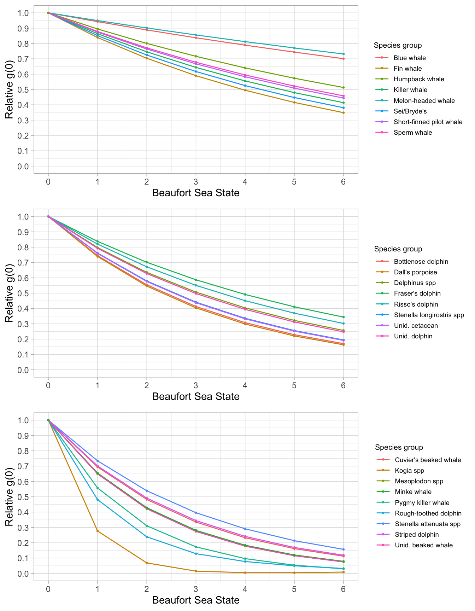

15 WHICEAS
Here we demonstrate code that reproduces the Bradford et al. (2022) WHICEAS report within the new LTabundR framework. This study estimates cetacean abundance for Hawaiian WHICEAS study area for 2017 and 2020. Here we use survey data from 1986 to 2020 to estimate Relative g(0) and detection functions. Currently, coefficients of variation (CV) of density and abundance are estimated using only 100 bootstrap iterations (the publication uses 1,000) to reduce processing time.
Data processing
We will use the same settings and edits presented earlier in this manual, provided here for convenience.
Edits
edits_file <- 'cnp_1986_2020_edits.RData'
#### Acoustic ID update ========================================================
# During the 2020 WHICEAS study, a sighting was assigned the species code 051
# for Unidentified *Mesoplodon* in the field.
# Later the acoustics team used click detections to re-classify this species
# to Blainsville's beaked whale (species code `"059"`).
# To update the `DAS` file accordingly, we can edit the species code directly
# within the appropriate line:
edit_acoustic <-
list(das_file = das_file,
type = 'text',
rows = 606393,
chars = 62:64,
edit = '059')
#### Cruise 1607 sighting 55 ===================================================
# This sighting, at sequence ID `032` below,
# currently triggers errors in `swfscDAS` due to a manually entered `R` event
# a few lines above that does not have the `P` (observer positions) event that
# typically follows it. Without tht `P` entry, the observer positions of the
# sighting are unknown.
# To fix this, we can stage an edit that copies the "P" line that occurs minutes
# earlier and pastes that line just below the rogue "R" line.
edit_1607_55 <-
list(das_file = das_file,
type = 'copy',
rows = 128111,
chars = NULL,
edit = 128118)
#### Cruise 1607 sighting 68 ==================================================
# This sighting faces a similar issue:
# a rogue `R` event without the follow-up `P` event.
# This case is also missing the follow-up `V` event (viewing conditions).
# To fix this we will stage a similar edit,
#this time copying and pasting two rows (`P` and `V` events)
# below the rogue `R` event:
edit_1607_68 <-
list(das_file = das_file,
type = 'copy',
rows = c(129982, 129983 , 129985),
chars = NULL,
edit = 129987)
#### Cruise 1621 sighting 245 =================================================
# This is another case of a rogue `R` event,
# again missing both the requisite `P` and the `V` post-`R` events.
edit_1621_245 <-
list(das_file = das_file,
type = 'copy',
rows = 271932:271933,
chars = NULL,
edit = 271937)
#### Timestamp issues with Cruise 1004 ========================================
# This edit will correct for the fact that all of Cruise 1004
# was conducted using UTC timestamps instead of local timestamps.
# A safe approximation of this edit would be to simply adjust the timezone
# by the GMT offset for Guam (UTC + 10 hours).
edit_1004_gmt10 <-
list(das_file = das_file,
type = 'function',
rows = 433327:437665,
chars = 6:39,
edit = 'function(x){das_time(x, tz_adjust = 10)$dt}')
# Combining and saving edits ==================================================
# Finally, we will collect these edits into a single `list`
# and save them for use during survey processing (next page).
edits <- list(edit_acoustic,
edit_1607_55,
edit_1607_68,
edit_1621_245,
edit_1004_gmt10)
# Save to file
saveRDS(edits,file=edits_file)
# Load them in
edits <- readRDS('cnp_1986_2020_edits.RData')Settings
Survey-wide settings
data(species_codes)
data(ships)
data(group_size_coefficients)
survey <- load_survey_settings(
out_handling = 'remove',
min_row_interval = 2,
max_row_interval = 3600,
max_row_km = 100,
km_filler = 1,
speed_filler = 10 * 1.852,
segment_method = "equallength",
segment_target_km = 150,
segment_max_interval = 24,
segment_remainder_handling = c("segment"),
ship_list = ships,
species_codes = species_codes,
group_size_coefficients = group_size_coefficients,
smear_angles = FALSE
)Cohort-specific settings
Cohort 1: all species
all_species <- load_cohort_settings(
id = "all", # *
species = NULL,
strata = c('WHICEAS', 'HI_EEZ', 'OtherCNP'), # *
probable_species = FALSE,
sighting_method = 0,
cue_range = 0:7,
school_size_range = c(0, 10000),
school_size_calibrate = TRUE,
calibration_floor = 0,
use_low_if_na = TRUE,
io_sightings = 0,
geometric_mean_group = TRUE,
truncation_km = 7.5, # *
beaufort_range = 0:6,
abeam_sightings = TRUE,
strata_overlap_handling = c("smallest"),
distance_types = c('S','F','N'),
distance_modes = c('P','C'),
distance_on_off = TRUE
)Process
settings <- load_settings(strata = strata_cnp,
survey = survey,
cohorts = list(all_species,
bottlenose,
spotted))
cruz <-
process_surveys(das_file = 'data/surveys/CenPac1986-2020_Final_alb.das',
settings = settings,
edits = edits)
# Save cruz object to file
save(cruz, file='whiceas/whiceas_cruz.RData')Rg0
To estimate Relative g(0) for our species of interest, we use the routine below, based on data from the same time period:
# Bring in 10km-segment data from all NOAA/NMFS surveys, 1986 - 2020
data("noaa_10km_1986_2020")
# Filter to analysis only
cruzi <- filter_cruz(noaa_10km_1986_2020,
analysis_only = TRUE,
eff_types = 'S',
bft_range = 0:6,
on_off = TRUE)
#### Prepare settings list for each species ====================================
species <- list(
list(spp = c('005', '016', '017'),
title = 'Delphinus spp',
truncation = 5.5,
constrain_shape=TRUE),
list(spp = c('002','006','089','090'),
title = 'Stenella attenuata spp',
truncation = 5.5),
list(spp = c('003','010','011','088','100','101','102','103','107'),
title = 'Stenella longirostris spp',
truncation = 5.5),
list(spp = '013',
title = 'Striped dolphin',
truncation = 5.5,
constrain_shape=TRUE),
list(spp = '015',
title = 'Rough-toothed dolphin',
truncation = 5.5),
list(spp = '018',
title = 'Bottlenose dolphin',
truncation = 5.5,
constrain_shape=TRUE),
#pool_bft = '12'),
list(spp = '021',
title = "Risso's dolphin",
truncation = 5.5,
constrain_shape=TRUE),
#pool_bft = '12'),
list(spp = '026',
title = "Fraser's dolphin",
truncation = 5.5),
list(spp = '031',
title = 'Melon-headed whale',
truncation = 5.5),
list(spp = '032',
title = 'Pygmy killer whale',
truncation = 5.5),
list(spp = '036',
title = 'Short-finned pilot whale',
truncation = 5.5,
constrain_shape=TRUE),
#pool_bft = '12'),
list(spp = '037',
title = 'Killer whale',
truncation = 5.5,
constrain_shape=TRUE),
#pool_bft = '12'),
list(spp = '046',
title = 'Sperm whale',
truncation = 5.5),
list(spp = c('047', '048', '080'),
title = 'Kogia spp',
truncation = 4.0,
constrain_shape = FALSE),
list(spp = '061',
title = "Cuvier's beaked whale",
truncation = 4.0,
constrain_shape=TRUE),
list(spp = '049',
title = 'Unid. beaked whale',
truncation = 5.5,
constrain_shape=TRUE),
list(spp = c('001','051','052','053','054','055',
'056','057','058','059','060','081',
'082','083','106','109'),
title = 'Mesoplodon spp',
truncation = 4.0,
constrain_shape=TRUE),
list(spp = '044',
title = "Dall's porpoise",
truncation = 5.5,
regions = 'CCS',
constrain_shape=TRUE),
list(spp = '071',
title = 'Minke whale',
truncation = 4.0,
regions='CCS',
constrain_shape = TRUE),
list(spp = c('072','073','099'),
title = "Sei/Bryde's",
truncation = 5.5),
list(spp = '074',
title = 'Fin whale',
truncation = 5.5,
regions = 'CCS'),
list(spp = '075',
title = 'Blue whale',
truncation = 5.5,
regions = 'CCS'),
list(spp = '076',
title = 'Humpback whale',
truncation = 5.5,
regions = 'CCS'),
list(spp = c('177','277','377','077'),
title = 'Unid. dolphin',
truncation = 5.5,
constrain_shape=TRUE),
list(spp = c('078','079','098','096'),
title = 'Unid. cetacean',
truncation = 5.5,
constrain_shape=TRUE))
#### Run Rg0 estimation analysis ===============================================
Rg0 <-
g0_table(cruzi,
species,
eff_types = 'S',
jackknife_fraction = 0.1)
# Save result to file
save(Rg0, file='whiceas/Rg0.RData')
Density & abundance
First we can define common values that will be constant across all estimates we produce:
results_path <- 'whiceas/lta/'
bootstraps <- 200 # use a low number for this demo
years <- 1986:2020
fit_regions <- NULL
fit_not_regions <- NULL
toplot = TRUE
verbose = TRUE
df_settings <-
list(covariates = c('bft','lnsstot','cruise','year','ship','species'),
covariates_factor = c(FALSE, FALSE, TRUE, TRUE, TRUE, TRUE),
covariates_levels = 2,
covariates_n_per_level = 10,
simplify_cue = TRUE,
simplify_bino = TRUE,
detection_function_base = 'hn',
base_model = '~1',
delta_aic = 2)For most species, we want to estimate density/abundance for the same set of year-region scenarios. To reduce code redundancy, as well as the risk of typing errors (and our work!), we can use the LTabundR function lta_estimates() to economize how we prepare our estimates input.
For most species, these are the year-region scenarios for which we want estimates:
The lta_estimates() function will generate a custom function that makes it easy to create a set of estimates sub-lists for each species of interest:
That result, estimator, is actually a function. Here’s an example of how this function will work, using the first species pool as an example:
estimates <-
c(estimator(spp = '013', title = "Striped dolphin"),
estimator(spp = '026', title = "Fraser's dolphin", alt_g0_spp = '013'),
estimator(spp = '031', title = "Melon-headed whale", alt_g0_spp = '013'))
estimates
[[1]]
[[1]]$years
[1] 2017
[[1]]$regions
[1] "WHICEAS"
[[1]]$spp
[1] "013"
[[1]]$title
[1] "Striped dolphin"
[[2]]
[[2]]$years
[1] 2020
[[2]]$regions
[1] "WHICEAS"
[[2]]$spp
[1] "013"
[[2]]$title
[1] "Striped dolphin"
[[3]]
[[3]]$years
[1] 2017
[[3]]$regions
[1] "WHICEAS"
[[3]]$spp
[1] "026"
[[3]]$title
[1] "Fraser's dolphin"
[[3]]$alt_g0_spp
[1] "013"
[[4]]
[[4]]$years
[1] 2020
[[4]]$regions
[1] "WHICEAS"
[[4]]$spp
[1] "026"
[[4]]$title
[1] "Fraser's dolphin"
[[4]]$alt_g0_spp
[1] "013"
[[5]]
[[5]]$years
[1] 2017
[[5]]$regions
[1] "WHICEAS"
[[5]]$spp
[1] "031"
[[5]]$title
[1] "Melon-headed whale"
[[5]]$alt_g0_spp
[1] "013"
[[6]]
[[6]]$years
[1] 2020
[[6]]$regions
[1] "WHICEAS"
[[6]]$spp
[1] "031"
[[6]]$title
[1] "Melon-headed whale"
[[6]]$alt_g0_spp
[1] "013"The output of estimator() is a list of sub-lists specifying a set of density/abundance estimates you want to produce based on the detection function for a single species pool.
Here is the full code for producing those estimates for all species from Bradford et al. (2021):
Multi-species pool 1
# Striped dolphin (013), Fraser's dolphin (026), Melon-headed whale (031)
if(TRUE){ # toggle
# Detection function specifications
fit_filters <-
list(spp = c('013', '026', '031'),
pool = 'Multi-species pool 1',
cohort = 'all',
truncation_distance = 5,
other_species = 'remove',
years = years,
regions = fit_regions,
not_regions = fit_not_regions)
# Density / abundance estimation plan
estimates <-
c(estimator(spp = '013', title = "Striped dolphin"),
estimator(spp = '026', title = "Fraser's dolphin", alt_g0_spp = '013'),
estimator(spp = '031', title = "Melon-headed whale", alt_g0_spp = '013'))
# Run analysis
results <- lta(cruz, Rg0, fit_filters, df_settings, estimates,
bootstraps = bootstraps,
toplot=toplot, verbose=verbose)
# Save result
(results_file <- paste0(results_path, fit_filters$pool, '.RData'))
saveRDS(results, file=results_file)
}Multi-species pool 2
# Rough-toothed dolphin (15), Common bottlenose dolphin (18), Risso's (21),
# Pygmy killer whale (32)
# Notes
# Bottlenose abundance is estimated in a separate cohort, but included here for DF fitting
if(TRUE){ # toggle
# Detection function specifications
fit_filters <-
list(spp = c('015', '018', '021', '032'),
pool = 'Multi-species pool 2',
cohort = 'all',
truncation_distance = 5,
years = years,
regions = fit_regions,
not_regions = fit_not_regions)
# Density / abundance estimation plan
estimates <-
c(estimator(spp = '015', title = "Rough-toothed dolphin"),
estimator(spp = '021', title = "Risso's dolphin"),
estimator(spp = '032', title = "Pygmy killer whale"))
# Run analysis
results <- lta(cruz, Rg0, fit_filters, df_settings, estimates,
use_g0 = TRUE,
bootstraps = bootstraps,
toplot=toplot, verbose=verbose)
# Save result
(results_file <- paste0(results_path, fit_filters$pool, '.RData'))
saveRDS(results, file=results_file)
}Multi-species pool 3
# Short-finned pilot whale (036), Longman's beaked whale (065)
# No Rg(0) available for Longman's -- will use SF pilot whale instead to estimate its weighted g0
if(TRUE){ # toggle
# Detection function specifications
fit_filters <-
list(spp = c('036', '065'),
pool = 'Multi-species pool 3',
cohort = 'all',
truncation_distance = 5,
years = years,
regions = fit_regions,
not_regions = fit_not_regions)
# Density / abundance estimation plan
estimates <-
c(estimator(spp = '036', title = "Short-finned pilot whale"),
estimator(spp = '065', title = "Longman's beaked whale",
alt_g0_spp = '036'))
# Run analysis
results <- lta(cruz, Rg0, fit_filters, df_settings, estimates,
use_g0 = TRUE,
bootstraps = bootstraps,
toplot=toplot, verbose=verbose)
# Save result
(results_file <- paste0(results_path, fit_filters$pool, '.RData'))
saveRDS(results, file=results_file)
}Multi-species pool 4
# Killer whale (37), sperm whale (46)
if(TRUE){ # toggle
# Detection function specifications
fit_filters <-
list(spp = c('037', '046'),
pool = 'Multi-species pool 4',
cohort = 'all',
truncation_distance = 5.5,
other_species = 'remove',
years = years,
regions = fit_regions,
not_regions = fit_not_regions)
# Density / abundance estimation plan
estimates <-
c(estimator(spp = '037', title = "Killer whale"),
estimator(spp = '046', title = "Sperm whale"))
# Run analysis
results <- lta(cruz, Rg0, fit_filters, df_settings, estimates,
use_g0 = TRUE,
bootstraps = bootstraps,
toplot=toplot, verbose=verbose)
# Save result
(results_file <- paste0(results_path, fit_filters$pool, '.RData'))
saveRDS(results, file=results_file)
}Multi-species pool 5
# Pygmy sperm whale (47), dwarf sperm whale (48), UNID Kogia (80),
# Blainville's beaked whale (59), Cuvier's beaked whale (61),
# UNID Mesoplodon (51), UNID beaked whale (49), Minke whale (71)
if(TRUE){ # toggle
# Detection function specifications
fit_filters <-
list(spp = c('047', '048', '080', '059', '061', '051', '049', '071'),
pool = 'Multi-species pool 5',
cohort = 'all',
truncation_distance = 4.5,
years = years,
regions = fit_regions,
not_regions = fit_not_regions)
# Density / abundance estimation plan
estimates <-
c(estimator(spp = '047', title = "Pygmy sperm whale"),
estimator(spp = '048', title = "Dwarf sperm whale"),
estimator(spp = '080', title = "Unidentified Kogia"),
estimator(spp = '059', title = "Blainville's beaked whale"),
estimator(spp = '061', title = "Cuvier's beaked whale"),
estimator(spp = '051', title = "Unidentified Mesoplodon"),
estimator(spp = '049',
title = "Unidentified beaked whale",
alt_g0_spp = c('061','051'),
combine_g0 = TRUE),
estimator(spp = '071', title = "Minke whale"))
# Note Barlow2015 provides absolute estimates
# for Cuviers, Kogia spp. and UNID Mesoplodon
# Specify those absolute estimates here, drawn from Bradford et al. (2022):
# Pygmy sperm
estimates[[1]]$g0 <- 0.005; estimates[[1]]$g0_cv <- 0.15
estimates[[2]]$g0 <- 0.004; estimates[[2]]$g0_cv <- 0.15
# Dwarf sperm
estimates[[3]]$g0 <- 0.005; estimates[[3]]$g0_cv <- 0.15
estimates[[4]]$g0 <- 0.004; estimates[[4]]$g0_cv <- 0.15
# UNID Kogia
estimates[[5]]$g0 <- 0.005; estimates[[5]]$g0_cv <- 0.15
estimates[[6]]$g0 <- 0.004; estimates[[6]]$g0_cv <- 0.15
# Cuvier's
estimates[[9]]$g0 <- 0.13; estimates[[9]]$g0_cv <- 0.20
estimates[[10]]$g0 <- 0.11; estimates[[10]]$g0_cv <- 0.21
# UNID Mesoplodon
estimates[[11]]$g0 <- 0.11; estimates[[11]]$g0_cv <- 0.30
estimates[[12]]$g0 <- 0.11; estimates[[12]]$g0_cv <- 0.30
# Run analysis
results <- lta(cruz, Rg0, fit_filters, df_settings, estimates,
use_g0 = TRUE,
bootstraps = bootstraps,
toplot=toplot, verbose=verbose)
# Save result
(results_file <- paste0(results_path, fit_filters$pool, '.RData'))
saveRDS(results, file=results_file)
}Multi-species pool 6
# Bryde's whale (72), Sei whale (73), Fin whale (74), Blue whale (75),
# Sei/Bryde's (99), Fin/Sei/Bryde's (72, 73, 74, 99)
# Bryde's, Sei's, and Sei/Bryde's all use same Rg0 (title = "Sei/Bryde's")
# Sei/Bryde's/Fin use an average of Fin and Sei/Bryde's.
if(TRUE){ # toggle
# Detection function specifications
fit_filters <-
list(spp = c('072', '073', '074','075','099', '199'),
pool = 'Multi-species pool 6',
cohort = 'all',
truncation_distance = 5.0,
years = years,
regions = fit_regions,
not_regions = fit_not_regions)
# Density / abundance estimation plan
estimates <-
c(estimator(spp = '072', title = "Bryde's whale"),
estimator(spp = '073', title = "Sei whale"),
estimator(spp = '074', title = "Fin whale"),
estimator(spp = '075', title = "Blue whale"),
estimator(spp = '099', title = "Sei/Bryde's whale"),
estimator(spp = '199',
title = "Sei/Bryde's/Fin whale",
alt_g0_spp = c('072', '073', '099', '074'),
combine_g0 = TRUE))
# Run analysis
results <- lta(cruz, Rg0, fit_filters, df_settings, estimates,
use_g0 = TRUE,
bootstraps = bootstraps,
toplot=toplot, verbose=verbose)
# Save result
(results_file <- paste0(results_path, fit_filters$pool, '.RData'))
saveRDS(results, file=results_file)
}Humpback whale
if(TRUE){ # toggle
# Detection function specifications
fit_filters <-
list(spp = c('076'),
pool = 'Humpback whale',
cohort = 'all',
truncation_distance = 5.5,
years = years,
regions = fit_regions,
not_regions = fit_not_regions)
# Density / abundance estimation plan
estimates <-c(estimator(spp = '076', title = "Humpback whale"))
# Run analysis
results <- lta(cruz, Rg0, fit_filters, df_settings, estimates,
use_g0 = TRUE,
bootstraps = bootstraps,
toplot=toplot, verbose=verbose)
# Save result
(results_file <- paste0(results_path, fit_filters$pool, '.RData'))
saveRDS(results, file=results_file)
}Unidentified rorquals
# UNID rorquals (70)
if(TRUE){ # toggle
# Detection function specifications
fit_filters <-
list(spp = c('070'),
pool = 'Unidentified rorqual',
cohort = 'all',
truncation_distance = 5.5,
other_species = 'coerce',
years = years,
regions = fit_regions,
not_regions = fit_not_regions)
# Density / abundance estimation plan
estimates <-
c(estimator(spp = '070',
title = "Unidentified rorqual",
alt_g0_spp = c('071','099','074','075'),
combine_g0 = TRUE))
# Run analysis
results <- lta(cruz, Rg0, fit_filters, df_settings, estimates,
use_g0 = TRUE,
bootstraps = bootstraps,
toplot=toplot, verbose=verbose)
# Save result
(results_file <- paste0(results_path, fit_filters$pool, '.RData'))
saveRDS(results, file=results_file)
}Unidentified dolphins
# UNID dolphin (177, 277, 377, 77)
if(TRUE){ # toggle
spp <- c('177','277','377','077')
pool_title <- 'Unidentified dolphin'
# Detection function specifications
fit_filters <-
list(spp = c('177','277','377','077'),
pool = pool_title,
cohort = 'all',
truncation_distance = 5.5,
other_species = 'coerce',
years = years,
regions = fit_regions,
not_regions = fit_not_regions)
# Density / abundance estimation plan
estimates <- estimator(spp = spp,
title = pool_title,
alt_g0_spp = c('002','013','018','015', '036', '021'),
combine_g0 = TRUE)
# Run analysis
results <- lta(cruz, Rg0, fit_filters, df_settings, estimates,
use_g0 = TRUE,
bootstraps = bootstraps,
toplot=toplot, verbose=verbose)
# Save result
(results_file <- paste0(results_path, fit_filters$pool, '.RData'))
saveRDS(results, file=results_file)
}Unidentified cetaceans
# UNID cetacean (78, 79, 98, 96)
if(TRUE){ # toggle
spp <- c('078','079','098','096')
pool_title <- 'Unidentified cetacean'
# Detection function specifications
fit_filters <-
list(spp = spp,
pool = pool_title,
cohort = 'all',
truncation_distance = 5.5,
other_species = 'coerce',
years = years,
regions = fit_regions,
not_regions = fit_not_regions)
# Density / abundance estimation plan
estimates <- estimator(spp = spp,
title = pool_title,
g0=1.0,
g0_cv = 0.0)
# Run analysis
results <- lta(cruz, Rg0, fit_filters, df_settings, estimates,
use_g0 = TRUE,
bootstraps = bootstraps,
toplot=toplot, verbose=verbose)
# Save result
(results_file <- paste0(results_path, fit_filters$pool, '.RData'))
saveRDS(results, file=results_file)
}Bottlenose dolphin
# Bottlenose dolphin (018)
if(TRUE){ # toggle
# Detection function specifications
fit_filters <-
list(spp = c('015', '018', '021', '032'),
pool = 'Bottlenose dolphin',
cohort = 'bottlenose',
truncation_distance = 5,
years = years,
regions = fit_regions,
not_regions = fit_not_regions)
# Density / abundance estimation plan
scenarios <- list(
list(years = 2017,
regions = 'WHICEAS',
regions_remove = c('Bottlenose_KaNi', 'Bottlenose_OUFI', 'Bottlenose_BI'),
region_title = '(WHICEAS)'),
list(years = 2020,
regions = 'WHICEAS',
regions_remove = c('Bottlenose_KaNi', 'Bottlenose_OUFI', 'Bottlenose_BI'),
region_title = '(WHICEAS)'))
estimator <- lta_estimates(scenarios)
estimates <- estimator(spp = '018', title = 'Bottlenose dolphin')
# Run analysis
results <- lta(cruz, Rg0, fit_filters, df_settings, estimates,
use_g0 = TRUE,
bootstraps = bootstraps,
toplot=toplot, verbose=verbose)
# Save result
(results_file <- paste0(results_path, fit_filters$pool, '.RData'))
saveRDS(results, file=results_file)
}Pantropical spotted dolphin
# Pantropical spotted dolphin (002)
if(TRUE){ # toggle
# Detection function specifications
fit_filters <-
list(spp = c('002'),
pool = 'Pantropical spotted dolphin',
cohort = 'spotted',
truncation_distance = 5,
years = years,
regions = fit_regions,
not_regions = fit_not_regions)
# Density / abundance estimation plan
scenarios <- list(
list(years = 2017,
regions = 'WHICEAS',
regions_remove = c('Spotted_OU', 'Spotted_FI', 'Spotted_BI'),
region_title = '(WHICEAS)'),
list(years = 2020,
regions = 'WHICEAS',
regions_remove = c('Spotted_OU', 'Spotted_FI', 'Spotted_BI'),
region_title = '(WHICEAS)'))
estimator <- lta_estimates(scenarios)
estimates <- estimator(spp = '002', title = 'Pantropical spotted dolphin')
# Run analysis
results <- lta(cruz, Rg0, fit_filters, df_settings, estimates,
use_g0 = TRUE,
bootstraps = bootstraps,
toplot=toplot, verbose=verbose)
# Save result
(results_file <- paste0(results_path, fit_filters$pool, '.RData'))
saveRDS(results, file=results_file)
}Results tables
Collate results and generate report:
Table 1. Sample sizes: total and detection functions.
The lta_report() function above attempts to generate sample size tables based on the cruz object and ltas results (see $table1a and $table1b outputs of lta_report()), but this is difficult to generalize into an automatic function, especially when cohort-specific geostrata are involved. For this reason the sample size estimates are split into two tables: reporti$table1a presents sample sizes of total sightings and total sightings used in detection function fitting, and reporti$table1b presents sampel sizes used in density estimation.
To expedite building up this sample size table, consider copying and pasting the table produced by lta_report()$table1b, then filling in the blanks with values from above:
Table 1b. Sample sizes: density estimation.
Table 2. Detection functions for cetacean species and taxonomic categories.
Table 3. Estimates of line-transect parameters for cetacean species and taxonomic categories.
Table 4. Estimates of density (individuals per 1,000 km2) and abundance for cetacean species and taxonomic categories sighted while on systematic survey effort.
Table A1. Study areas.
Table A2. Effort totals and by Beaufort sea-state, in each survey year.
reporti$tableA2
$`2017`
# A tibble: 3 × 9
Species Stratum Effort B1 B2 B3 B4 B5 B6
<chr> <chr> <dbl> <dbl> <dbl> <dbl> <dbl> <dbl> <dbl>
1 spotted WHICEAS 2787 0.0125 0.103 0.114 0.304 0.368 0.0987
2 bottlenose WHICEAS 2939 0.0119 0.0911 0.114 0.312 0.380 0.0910
3 all WHICEAS 3040 0.0115 0.0942 0.111 0.320 0.370 0.0934
$`2020`
# A tibble: 3 × 9
Species Stratum Effort B1 B2 B3 B4 B5 B6
<chr> <chr> <dbl> <dbl> <dbl> <dbl> <dbl> <dbl> <dbl>
1 spotted WHICEAS 4079 0.0147 0.0382 0.0710 0.274 0.401 0.201
2 bottlenose WHICEAS 4417 0.0174 0.0390 0.0715 0.281 0.407 0.185
3 all WHICEAS 4585 0.0170 0.0406 0.0695 0.281 0.407 0.184